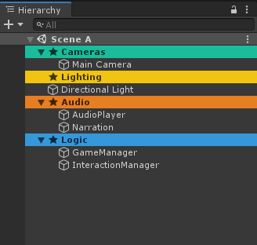

Create coloured dividers to organise your Unity hierarchy.

Hierarchy Dividers allows you to create separators in your Unity hierarchy
window. These dividers are useful for organising a scene into different categories or
folders.
Dividers can be created via the regular GameObject context menu(GameObject > Editor Divider)
Divider headings can be customised, although some presets are defined.
Divider colours can be customised to any colour or chosen from the editor dividers palette.